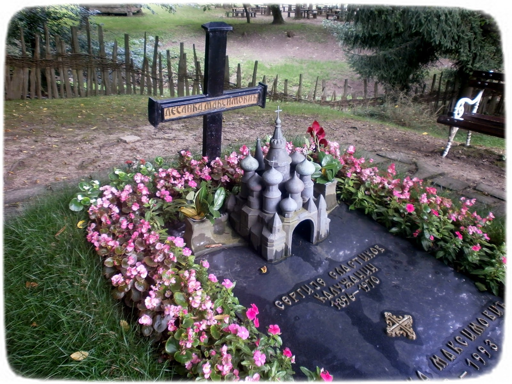

| Почетна | Рођење и младост | Почетак уметничког рада | Њена литература | Одликовања и признања |
Десанка Максимовић почетак Другог светског рата дочекује у пензији. Иако је одложила професорски дневник, није одложила оловку и папир. Погођена стрељањем студената у Крагујевцу 1941. године, написала је крваву бајку , песму која ће бити објављена убрзо по завршетку рата. „Та песма је снимљена, а не написана. У мени је било осећање мржње и револта... „Када сам чуо шта се десило у Крагујевцу, у мени се родила песма“, рекао је писац деценијама касније . Шаетовићева сматра да су ови стихови „њен најдубљи и најснажнији одговор на оно што се дешавало у Шумарицама, а поред низа других песама, истичу се једноставно као медаљон њеног песничког опуса који ће одолети свим оценама које долазе и пролазе”. . Ђурић каже да стихове „о брдовитом Балкану и групи ђака који су умрли у једном дану” данас проучавају многи народи, што говори о универзалном карактеру песме и снажним вредностима које су уткане у ово књижевно дело. . Песникиња је 1965. године постала редовни члан Српске академије наука и уметности , на шта је била веома поносна . Годину дана раније објављена је њена збирка песама Тражим пимиловање . „Збирка је поетски искорак који спаја савремени песнички израз и наслеђе одређених лексичких конструкција које су важиле за средњовековни период и где се говори о правима свих оних који су на неки начин маргинализовани“, каже Шаетовић. Ђурић оцењује да се песникиња обратила „својој унутрашњости, тежећи некој врсти равнотеже и мира који је желела да постигне писањем”. „С друге стране, њене речи су биле упућене сваком човеку подједнако – ономе што је за њега невино, што је на известан начин погрешно схваћено, и треба да се манифестује. Она је у њима пробудила ту најтананију људску црту, све оно најдубље и најтананије у сваком човеку“, каже Ђурић.
Познати српски песник Стеван Раичковић је овако видео Десанку Максимовић:
„Десанку Максимовић многи сматрају песником љубави, младости и ведрине, песником земаљских лепота и плодова. У њој, чини се, пре треба видети великог песника великих страхова и великих сумњи. Она је можда најаутентичнији песник Србије. Али је она још аутентичнија када опева неку земљу која и јесте и није, која и постоји и не постоји, и за коју се не зна да ли је песников завичај или земља његовог прогонства. Од када је објавила своје прве песме 1920. године у часопису Мисао она непрекидно ствара, тако да спада у наше најплодније песнике. Објавила је око 50 књига поезије, песама и прозе за децу и омладину, приповедачке, романсијерске и путописне прозе. „Када су се стварале ове песме, извирали су стихови као вода; као да сам неку чесму отворила. И сама сам се чудила како су текли глатко, непрестано... Догодило се оно најпожељније,“
Десанка Максимовић је преминула 11. фебруара 1993. године у Београду. У завичајној Бранковини, где је, по сопственој жељи, сахрањена, створено је мало песничко светилиште. Њена хумка, подигнута по узору на скромна и проста сеоска гробишта, постала је место ходочашћа многих песника, уметника, културних радника и поклоника њеног песништва.
